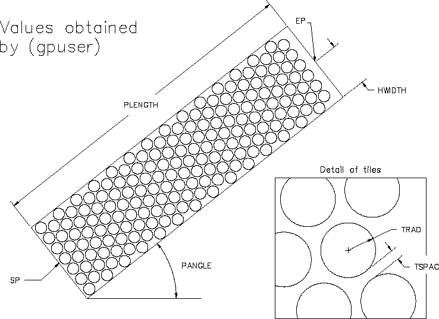

Autodesk AutoCAD 2021: ActiveX Developer's Guide > ActiveX/VBA Tutorial: Design the Garden Path > Tutorial: Designing a Garden Path (VBA/ActiveX) >
The gpuser subroutine prompts the user for information necessary to draw a garden path.
In this subroutine, you use the user input methods of the Utility object and calculate values used to create the geometry for the outside edges of the path.
' Acquire the information for the garden path Private Sub gpuser() ' Defines a local variant variable Dim varRet As Variant ' Prompt the user for the start point of the path's centerline varRet = ThisDrawing.Utility.GetPoint( , "Specify start point of path: ") sp(0) = varRet(0) sp(1) = varRet(1) sp(2) = varRet(2) ' Prompt the user for the endpoint of the path's centerline varRet = ThisDrawing.Utility.GetPoint(sp, "Specify endpoint of path: ") ep(0) = varRet(0) ep(1) = varRet(1) ep(2) = varRet(2) ' Prompt for half of the path's width hwidth = ThisDrawing.Utility.GetDistance(sp, "Specify half width of path: ") ' Prompt for the radius of a tile trad = ThisDrawing.Utility.GetDistance(sp, "Specify radius of tiles: ") ' Prompt for the spacing between the tiles tspac = ThisDrawing.Utility.GetDistance(sp, "Specify spacing between tiles: ") ' Calculate the angle from the axis pangle = ThisDrawing.Utility.AngleFromXAxis(sp, ep) ' Multiple by two for the total width of the path totalwidth = 2 * hwidth ' Calculate the distance of the path plength = distance(sp, ep) ' Calculate the angle of the path plus or minus 90 degrees angp90 = pangle + dtr(90) angm90 = pangle - dtr(90) End Sub
The following illustration shows how the values within the gpuser subroutine are obtained or calculated for the garden path.
